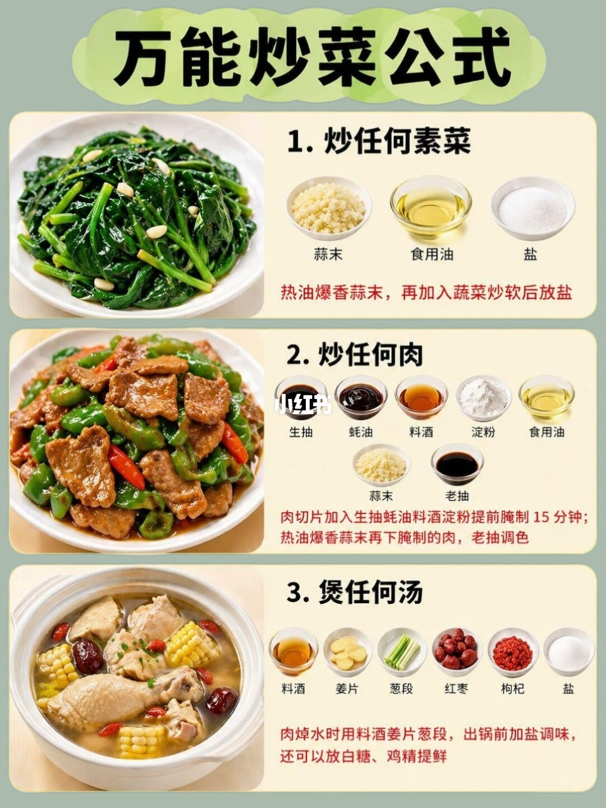
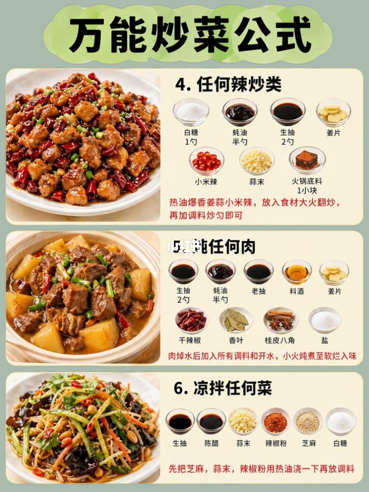
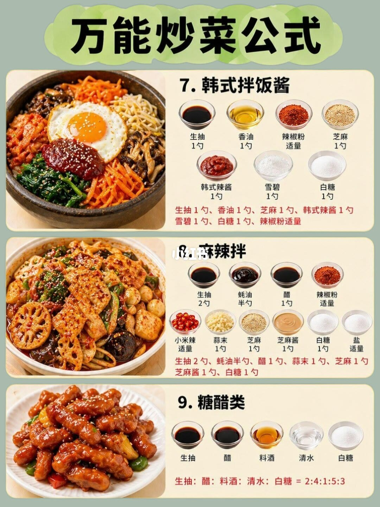
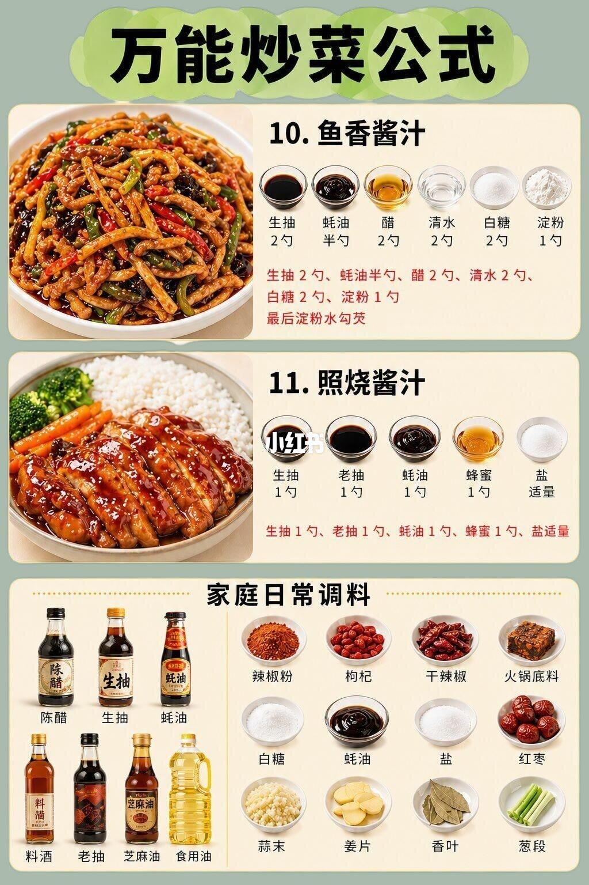

图文实录 · 小红书 · 走过看过遇见过
万能炒菜公式：11 套调味，勺数只记图上写出来的
四页共 11 个公式，从素菜、炒肉、煲汤，收到酱汁和家里常备调料。有数字的只有勺、半勺、1 小块、15 分钟和一组比例；图上没有克。
1/4
素菜后放盐，炒肉先腌，汤在出锅前调
1. 炒任何素菜：碗里是蒜末、食用油、盐。红字是「热油爆香蒜末，再加入蔬菜炒软后放盐」。没有勺数。
2. 炒任何肉：生抽、蚝油、料酒、淀粉、食用油、蒜末、老抽。红字写肉切片后用生抽、蚝油、料酒、淀粉提前腌制 15 分钟；热油爆香蒜末，再下腌好的肉，老抽调色。这 15 分钟是这一条里唯一的时间。
3. 煲任何汤：料酒、姜片、葱段、红枣、枸杞、盐。红字写肉焯水时用料酒、姜片、葱段，出锅前加盐；还可以放白糖、鸡精提鲜。白糖和鸡精只出现在这句话里，六个碗里没有。

2/4
辣炒和炖肉开始标勺，凉拌只标顺序
4. 任何辣炒类：白糖 1 勺、蚝油半勺、生抽 2 勺、火锅底料 1 小块。姜片、小米辣、蒜末旁边没有勺数。红字：热油爆香姜蒜小米辣，放入食材大火翻炒，再加调料炒匀。
5. 炖任何肉：生抽 2 勺、蚝油半勺。老抽、料酒、姜片、干辣椒、香叶、桂皮八角、盐没有勺数。红字：肉焯水后加入所有调料和开水，小火炖到软烂入味。
6. 凉拌任何菜：生抽、陈醋、蒜末、辣椒粉、芝麻、白糖，全部没有勺数。红字只规定顺序：先把芝麻、蒜末、辣椒粉用热油浇一下，再放调料。

3/4
两套酱按勺，糖醋改成比例
7. 韩式拌饭酱：生抽 1 勺、香油 1 勺、芝麻 1 勺、韩式辣酱 1 勺、雪碧 1 勺、白糖 1 勺，辣椒粉适量。页底红字把这七项又写了一遍。
8. 麻辣拌：生抽 2 勺、蚝油半勺、醋 1 勺、蒜末 1 勺、芝麻 1 勺、芝麻酱 1 勺、白糖 1 勺。辣椒粉、小米辣、盐标的是适量。红字复述了有勺的七项，没有把「适量」再写进去。
9. 糖醋类：碗是生抽、醋、料酒、清水、白糖。红字是比例，生抽：醋：料酒：清水：白糖 = 2:4:1:5:3。没有写成勺，也没有克。

4/4
鱼香要勾芡，照烧用蜂蜜，最后是调料柜
10. 鱼香酱汁：生抽 2 勺、蚝油半勺、醋 2 勺、清水 2 勺、白糖 2 勺、淀粉 1 勺。红字末句是「最后淀粉水勾芡」。
11. 照烧酱汁：生抽 1 勺、老抽 1 勺、蚝油 1 勺、蜂蜜 1 勺，盐适量。
页底「家庭日常调料」是库存，不是第 12 个公式。瓶子一侧是陈醋、生抽、蚝油、料酒、老抽、芝麻油、食用油。格子里是辣椒粉、枸杞、干辣椒、火锅底料、白糖、蚝油、盐、红枣、蒜末、姜片、香叶、葱段。蚝油出现了两次。

汇总
先选菜，再抄图上有的数
结论。这 11 条是按菜型给的调料组合和先后顺序。能当数字用的，只有图上写明的勺、半勺、1 小块、腌 15 分钟，以及糖醋的 2:4:1:5:3。生抽几乎条条都在；盐多数放在后面，或写成适量。
支撑页。第 1 页给出素菜、炒肉、煲汤的顺序，以及炒肉 15 分钟。第 2 页给出辣炒和炖肉的勺，以及凉拌先浇热油。第 3 页给出韩式、麻辣拌的勺和糖醋比例。第 4 页给出鱼香勾芡、照烧各 1 勺，并列出家里常备的瓶子和干料。
边界。全文没有克，也没有把「勺」换成毫升。「任何」是作者的分类，不是对每种菜的验证。适量、1 小块、火锅底料的品牌都没有再定义。白糖和鸡精写在煲汤的句子里，碗里没画。调料柜不能当成另一套配方。